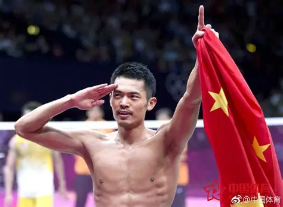
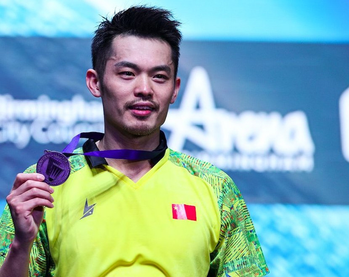
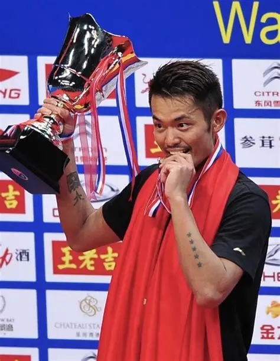
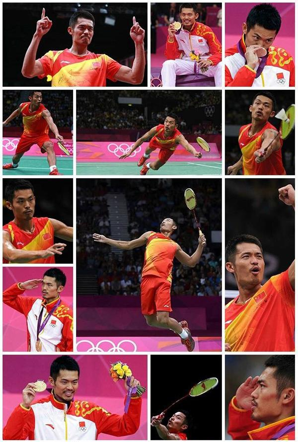
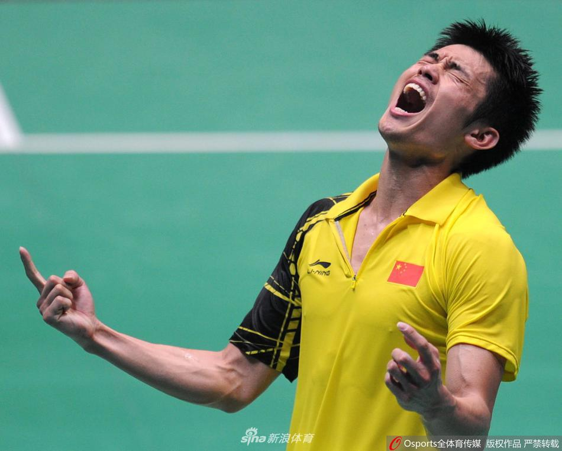
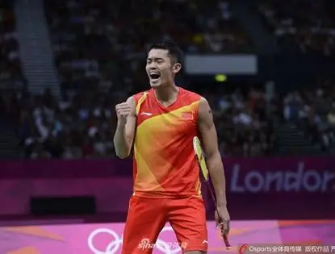
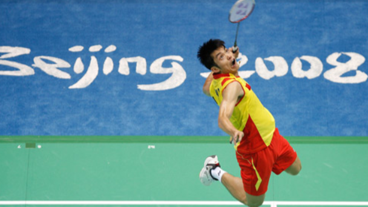
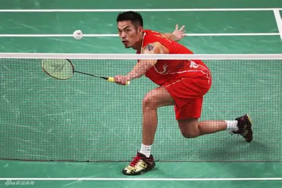

人物简介
林丹，1983年10月14日出生于福建省龙岩市，中国羽毛球男子单打传奇运动员，被全球球迷尊称为“超级丹”，是公认的世界羽毛球历史上最伟大的男单运动员。
他5岁接触羽毛球，12岁进入八一队，17岁入选国家队，职业生涯长达20年。左手持拍的他，以暴力的后场杀球、细腻的网前技术、钢铁般的大赛心理素质和超强的体能储备著称，巅峰时期长期统治世界羽坛，缔造了前无古人的羽坛王朝。
林丹是羽毛球历史上首位，也是至今唯一一位集齐奥运会、世锦赛、世界杯、汤姆斯杯、苏迪曼杯、亚运会、亚锦赛、全英赛、全运会冠军的双圈全满贯选手，这一成就至今无人能及。2020年7月4日，林丹正式宣布退役，结束了自己辉煌的职业运动员生涯，留下了无数经典名场面和无法超越的历史纪录。
林丹不仅在赛场上创造了无数传奇，也在场外以谦逊、低调、敬业的态度赢得了全球球迷的尊敬和喜爱。他的职业精神、体育道德和对羽毛球运动的热爱，激励了一代又一代年轻球员追逐梦想，推动了羽毛球运动在全球范围内的发展与普及。
核心档案
出生日期：1983年10月14日
出生地：福建龙岩
持拍方式：左手持拍
打法风格：进攻型全场突击
国家队生涯：2000-2020年
世界第一时长：累计235周

网站导航




赛场精彩瞬间




经典赛事集锦
林丹生涯十佳球 | 奥运夺冠经典名场面